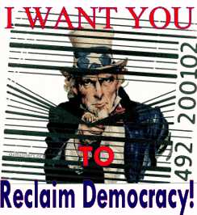
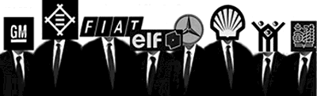

Our Modest Purpose
|
 |
|
 |
 |
PAUL REVERE, IT'S TIME AGAIN: First the Red Coats, Now the Suits...From Star Wars and global warming to genetically modified foods and consumption-banzai! eco-devastation, it seems our entire national policy agenda has been hijacked by the Fortune 2000. The big corporate bodies of the land have quite apparently bought out our political leaders, commandeered our media, and now endanger the planet�s peace, diversity and environment as well as our health, children and sovereignty as a people. It is time for concerned citizens, students and activist groups to look behind the individual symptoms of this spreading plague and expose its common corporate cause.
So on September 21st, first harvest equinox of the new millennium, Jim and a truckload of ornery friends will launch a defiant national barnstorming tour to :
- awaken America to the clear and present danger of corporate domination;
- catalyze new NGO collaborations to address the central sources of corporate power; and
- seed a nationwide bloom of local insurrections against corporate sovereignty, personhood and the other illegitimate privileges they have usurped over the years (e.g., their rights to enjoy Bill of Rights protections, to demand welfare, to suborn elections, to dictate policy, to overwhelm local business, to own life forms, etc.)
Jim is preparing this new chautauqua series in collaboration with such national organizations as ACORN, Citizen�s Trade Campaign, Global Exchange, Public Citizen, United for a Fair Economy, and USAction, as well as such noted activists as Ben & Jerry, Paul Wellstone, and Patch Adams. But since only the local activist communities can give these events their final form, meaning and life, your spirited participation is urgently invited.